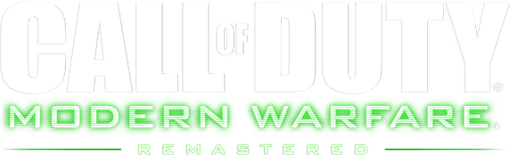

EACWorksYT has a YouTube channel with over 1,000 subscribers and 365 videos. The content includes:
- Roblox: Videos related to the game Roblox, such as gameplay and funny moments.
- Among Us: Funny moments and gameplay from Among Us.
- Stumble Guys: Highlights and funny moments from the game Stumble Guys.
- Call Of Duty: Call Of Duty Modern Warfare gameplay with 3 series
- Shorts: A collection of short videos, including funny moments and other entertaining content
.png)
I played Stumble Guys since March 2021 which is still old and it’s still available on mobile. And then, the developer made a Stumble Guys in PC version. This game is popular in 2022.
link playlist Stumble Guys
-> https://www.youtube.com/playlist?list=PLvDfS4ZaoRrHkRc
82BcUlZeQXc2ylx_8B
.png)


I also played Call Of Duty games since 2022 and it’s Call Of Duty Modern Warfare series. There are 2 Call Of Duty Modern Warfare series which it’s been remastered to improve graphics and details, and I’ll make the remastered gameplay content. But in Modern Warfare 3 we don’t know are they focus on something MW3 (2011) remastered or Modern Warfare Reboot.
- link playlist Call Of Duty Modern Warfare Remastered -> https://www.youtube.com/playlist?list=PLvDfS4ZaoRrFPmwieFX8MUrWOkuDSxThL
- link playlist Call Of Duty Modern Warfare 2 Campaign Remastered -> https://www.youtube.com/playlist?list=PLvDfS4ZaoRrEfsaxBU26WZOV2zX5GRMbx
- link playlist Call Of Duty Modern Warfare 3 -> https://www.youtube.com/playlist?list=PLvDfS4ZaoRrHs_m_PqEvf3NKzU9Zzc7V3
.png)
I also played Roblox Arsenal. Arsenal is an FPS game in Roblox which you play with 2 teams, 4 teams, or free for all and then who got 16/32/33 kills, is the winner and then the game is over.
I need to improve my playing skills. So I played Roblox not only Arsenal, but I played like aim training, Natural Disaster Survival, and more that I think that is fun.
- link playlist Roblox Arsenal -> https://www.youtube.com/playlist?list=PLvDfS4ZaoRrEl9a-RVesxkCYjWDCMEbG2
- link playlist Roblox -> https://www.youtube.com/playlist?list=PLvDfS4ZaoRrHI64PcjTiD8Wd-of5kNcEr
Not only that I make a gaming contents, but also I make a programming in Scratch.
This is a project which I did the Summative Informatics. We did the collaboration with my team using Blocklive extension. I joined Scratch since 2022 and making projects like Jumping Game, Scratch Game, Catch Game, Pong Ball game, and more. But not only games that I made. I also make a program like Solving Circle and Fractal Drawing.